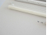
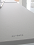
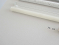
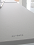

COMMUNES MESURES, 2011
COMMUNES MESURES, 2011Sculpture
8 tables servant de support à 8 moulages,
représentant les 8 distances sociales
définies par l’anthropologue américain Edward T.Hall,
selon la notion de proxémie (distance interculturelle entre les individus)
8 tables en métal (110 x 40 x 90 cm chacune),
carton, texte au mur et moulages en argile,
plâtre, bois, paraffine, verre, béton, acier
Dimensions variables (environ 9m de longueur)
 
